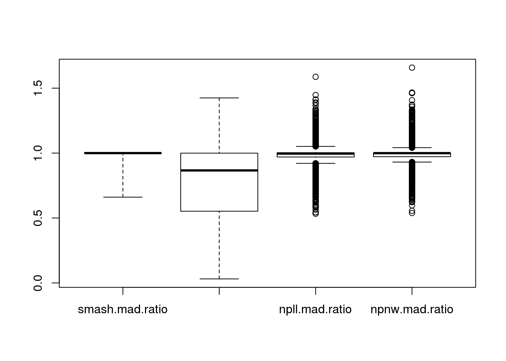
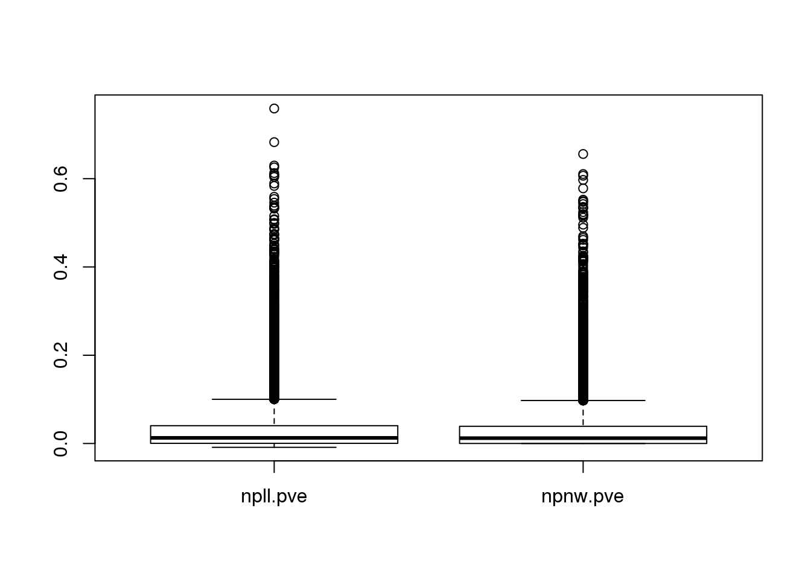
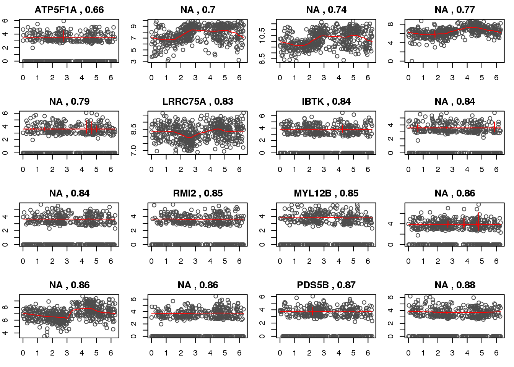
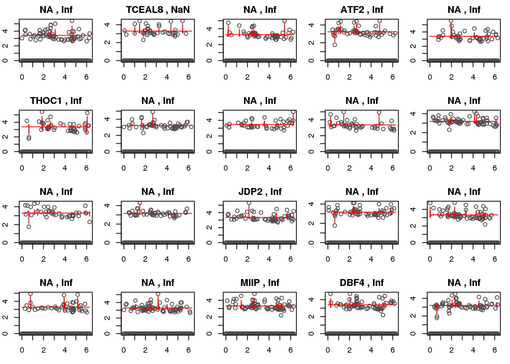

Last updated: 2018-05-07
Code version: a2240aa
Packages
library(circular)
library(conicfit)
library(Biobase)
library(dplyr)
library(matrixStats)
library(NPCirc)
library(smashr)Load data
df <- readRDS(file="../data/eset-filtered.rds")
pdata <- pData(df)
fdata <- fData(df)
# select endogeneous genes
counts <- exprs(df)[grep("ENSG", rownames(df)), ]
log2cpm.all <- t(log2(1+(10^6)*(t(counts)/pdata$molecules)))
# log2cpm.all <- readRDS("../output/seqdata-batch-correction.Rmd/log2cpm.rds")
# log2cpm.adjust <- readRDS("../output/seqdata-batch-correction.Rmd/log2cpm.adjust.rds")
# log2cpm <- log2cpm.all[grep("ENSG", rownames(log2cpm.all)), ]
# import corrected intensities
pdata.adj <- readRDS("../output/images-normalize-anova.Rmd/pdata.adj.rds")
macosko <- readRDS("../data/cellcycle-genes-previous-studies/rds/macosko-2015.rds")
# log2cpm.high <- log2cpm.detected[order(rowMeans(log2cpm.detected))[1:100], ]
source("../code/utility.R")
summary(colSums(counts)) Min. 1st Qu. Median Mean 3rd Qu. Max.
22207 44586 52597 53445 61790 103255 summary(rowMeans(log2cpm.all>0)) Min. 1st Qu. Median Mean 3rd Qu. Max.
0.08884 0.48104 0.74756 0.69915 0.94691 1.00000 log2cpm.detected <- log2cpm.all[rowMeans(log2cpm.all>0)>.8,]pc.fucci <- prcomp(subset(pdata.adj,
select=c("rfp.median.log10sum.adjust",
"gfp.median.log10sum.adjust")),
center = T, scale. = T)
Theta.cart <- pc.fucci$x
library(circular)
Theta.fucci <- coord2rad(Theta.cart)
df <- data.frame(theta=as.numeric(Theta.fucci))
rownames(df) <- rownames(pdata.adj)
Theta.fucci <- 2*pi - Theta.fucci
#saveRDS(as.numeric(Theta.fucci), file = "../output/npreg.Rmd/theta.rds")–
Analysis was done in a batch job. See /code/npreg.Rmd for codes for submitting the batch job.
Three methods are compared: smash, kernel regression using NW-estimate, and kernel regression using LL-estimate.
In running smash, I imputed the zero-valued expression with mean of expression for each gene. In running kernel methods, I omitted the zero-valued cells
For comparison involving smash, we take 512 randomly selected cells and analyze these for all three methods. MAD is employed to evaluate the fit. Specifically, MAD(data-fitted mean)/MAD(data-data.mean).
For comparison of the two kernel regression methods, I included all of the ~900 cells. PVE (proportion of variance explained) is computed to evalulate the fit. Specifically, 1-var(data-fitted mean)/var(data).
smashr package was used to run smash, and NPCirc package was used to run the two kernel regression methods.
Compare MAD ratio of data from the fitted mean versus the grand mean (not fitted). Briefly,
\[ mad.ratio = MAD(expression_g - fitted.g)/MAD(expression_g - mean.g) \]
out.methods <- readRDS("../output/npreg-methods.Rmd/out.methods.rds")
mad.ratio <- data.frame(smash.mad.ratio=sapply(out.methods, "[[", "smash.mad.ratio"),
smash.pois.mad.ratio=sapply(out.methods, "[[", "smash.pois.mad.ratio"),
npll.mad.ratio=sapply(out.methods, "[[", "npll.mad.ratio"),
npnw.mad.ratio=sapply(out.methods, "[[", "npnw.mad.ratio"))
pve <- data.frame(npll.pve=sapply(out.methods, "[[", "npll.pve"),
npnw.pve=sapply(out.methods, "[[", "npnw.pve"))
boxplot(mad.ratio)
boxplot(pve)
enrichment function choose top ranked genes
enrich.order <- function(cutoffs, metrics, cyclegenes, allgenes) {
# out <- order(mad.ratio$smash.mad.ratio)
# cutoffs <- c(100, 200, 300)
cycle.rich <- sapply(cutoffs, function(x) {
sig.cycle <- sum(allgenes[metrics[1:x]] %in% cyclegenes)/x
non.cycle <- sum(allgenes[-metrics[1:x]] %in% cyclegenes)/(length(allgenes)-x)
cbind(as.numeric(sum(allgenes[metrics[1:x]] %in% cyclegenes)),
sig.cycle/non.cycle)
})
colnames(cycle.rich) <- cutoffs
rownames(cycle.rich) <- c("nsig.genes.cycle", "fold.sig.vs.nonsig.cycle")
cycle.rich
}smash gaussian enrichment.
enrich.order(cutoffs = c(100, 200, 300),
metrics = order(mad.ratio$smash.mad.ratio),
cyclegenes = macosko$ensembl,
allgenes = rownames(log2cpm.all)) 100 200 300
nsig.genes.cycle 9.000000 15.000000 19.000000
fold.sig.vs.nonsig.cycle 1.942012 1.622754 1.368612smash poisson enrichment.
enrich.order(cutoffs = c(100, 200, 300),
metrics = order(mad.ratio$smash.pois.mad.ratio),
cyclegenes = macosko$ensembl,
allgenes = rownames(log2cpm.all)) 100 200 300
nsig.genes.cycle 2.0000000 10.000000 13.0000000
fold.sig.vs.nonsig.cycle 0.4256809 1.071146 0.9252485kernel LL-estimator enrichment
enrich.order(cutoffs = c(100, 200, 300),
metrics = order(mad.ratio$npll.mad.ratio),
cyclegenes = macosko$ensembl,
allgenes = rownames(log2cpm.all)) 100 200 300
nsig.genes.cycle 5.00000 8.0000000 11.000000
fold.sig.vs.nonsig.cycle 1.07045 0.8535433 0.779802kernel NW-estimator enrichment
enrich.order(cutoffs = c(100, 200, 300),
metrics = order(mad.ratio$npnw.mad.ratio),
cyclegenes = macosko$ensembl,
allgenes = rownames(log2cpm.detected)) 100 200 300
nsig.genes.cycle 2.0000000 5.0000000 9.000000
fold.sig.vs.nonsig.cycle 0.2665738 0.3290028 0.390767Check smash genes.
ii.check <- order(mad.ratio$smash.mad.ratio)[c(1:16)]
library(mygene)
par(mfrow=c(4,4), mar=c(3,2,2,1))
ensg <- rownames(log2cpm.detected)[ii.check]
symbols <- queryMany(ensg, scopes="ensembl.gene",
fields=c("symbol"), species="human")@listData$symbolFinished
Pass returnall=TRUE to return lists of duplicate or missing query terms.for (i in 1:length(ii.check)) {
ii <- ii.check[i]
with(out.methods[[ii]], {
plot(y=yy.train,
x=xx.train,
xlab = "estimated cell time", ylab = "log2CPM", col = "gray30",
main=paste(symbols[i], ",", round(mad.ratio$smash.mad.ratio[ii],2)))
lines(x=smash.xx,
y=smash.yy, col = "red", pch = 16, cex=.6)
})
}
Check kernel LL genes.
ii.check <- order(mad.ratio$npll.mad.ratio)[c(1:20)]
library(mygene)
par(mfrow=c(4,5), mar=c(3,2,2,1))
ensg <- rownames(log2cpm.detected)[ii.check]
symbols <- queryMany(ensg, scopes="ensembl.gene",
fields=c("symbol"), species="human")@listData$symbolFinished
Pass returnall=TRUE to return lists of duplicate or missing query terms.for (i in 1:length(ii.check)) {
ii <- ii.check[i]
with(out.methods[[ii]], {
plot(y=yy.train,
x=xx.train,
xlab = "estimated cell time", ylab = "log2CPM", col = "gray30",
main=paste(symbols[i], ",", round(mad.ratio$smash.mad.ratio[ii],2)))
lines(x=smash.xx,
y=smash.yy, col = "red", pch = 16, cex=.6)
})
}
pve <- data.frame(npll.pve=sapply(out.methods, "[[", "npll.pve"),
npnw.pve=sapply(out.methods, "[[", "npnw.pve"))
boxplot(pve)enrichment function choose top ranked genes
enrich.pve <- function(cutoffs, metrics, cyclegenes, allgenes) {
# out <- order(mad.ratio$smash.mad.ratio)
# cutoffs <- c(100, 200, 300)
cycle.rich <- sapply(cutoffs, function(x) {
sig.cycle <- sum(allgenes[metrics>x] %in% cyclegenes)/length(allgenes[metrics>x])
non.cycle <- sum(allgenes[metrics<x] %in% cyclegenes)/length(allgenes[metrics<x])
cbind(as.numeric(sum(allgenes[metrics>x] %in% cyclegenes)),
sig.cycle/non.cycle)
})
colnames(cycle.rich) <- cutoffs
rownames(cycle.rich) <- c("nsig.genes.cycle", "fold.sig.vs.nonsig.cycle")
cycle.rich
}kernel LL-estimator enrichment
enrich.pve(cutoffs = c(.05, .1, .2, .3),
metrics = pve$npll.pve,
cyclegenes = macosko$ensembl,
allgenes = rownames(log2cpm.all)) 0.05 0.1 0.2 0.3
nsig.genes.cycle 114.000000 48.000000 18.000000 11.000000
fold.sig.vs.nonsig.cycle 1.133994 1.164018 1.204267 1.711535enrich.order(cutoffs = c(100, 200, 300),
metrics = order(pve$npll.pve, decreasing=T),
cyclegenes = macosko$ensembl,
allgenes = rownames(log2cpm.all)) 100 200 300
nsig.genes.cycle 7.000000 14.000000 17.000000
fold.sig.vs.nonsig.cycle 1.504519 1.511554 1.219639kernel NW-estimator enrichment
enrich.pve(cutoffs = c(.05, .1, .2, .3),
metrics = pve$npnw.pve,
cyclegenes = macosko$ensembl,
allgenes = rownames(log2cpm.all)) 0.05 0.1 0.2 0.3
nsig.genes.cycle 107.000000 41.000000 10.0000000 6.000000
fold.sig.vs.nonsig.cycle 1.095707 1.056067 0.8478942 1.268477enrich.order(cutoffs = c(100, 200, 300),
metrics = order(pve$npnw.pve, decreasing=T),
cyclegenes = macosko$ensembl,
allgenes = rownames(log2cpm.all)) 100 200 300
nsig.genes.cycle 5.00000 9.0000000 10.0000000
fold.sig.vs.nonsig.cycle 1.07045 0.9621302 0.7075099Print top 500 genes.
write.table(rownames(log2cpm.all)[order(pve$npll.pve, decreasing=T)[1:5000]],
file = "../output/npreg-methods.Rmd/npll.genes.txt",
quote=F, col.names=F, row.names=F)
write.table(rownames(log2cpm.all)[order(pve$npnw.pve, decreasing=T)[1:5000]],
file = "../output/npreg-methods.Rmd/npnw.genes.txt",
quote=F, col.names=F, row.names=F)
write.table(rownames(log2cpm.all),
file = "../output/npreg-methods.Rmd/allgenes.txt",
quote=F, col.names=F, row.names=F)This R Markdown site was created with workflowr